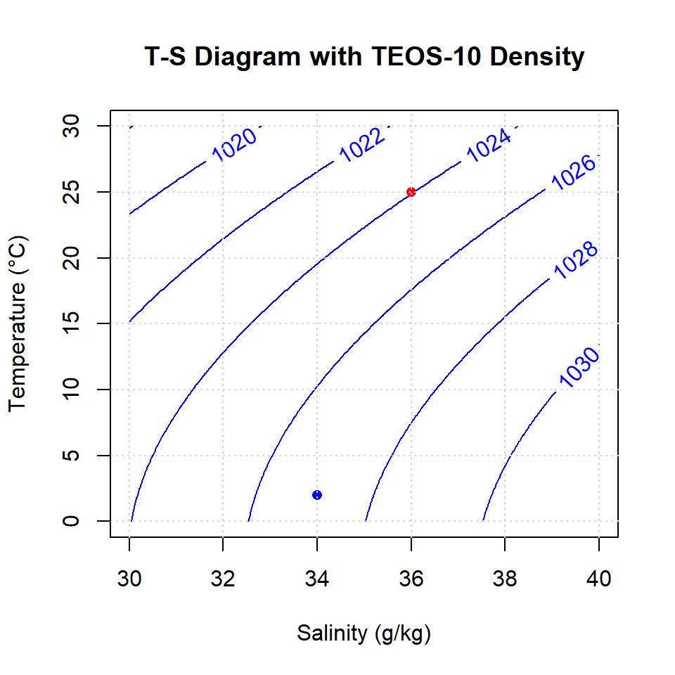
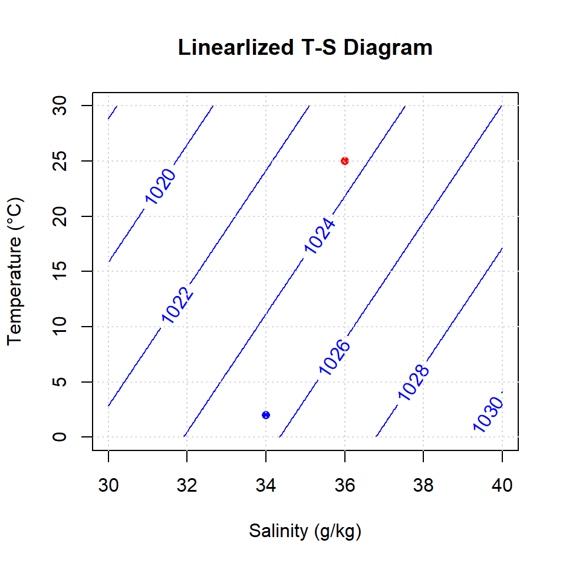
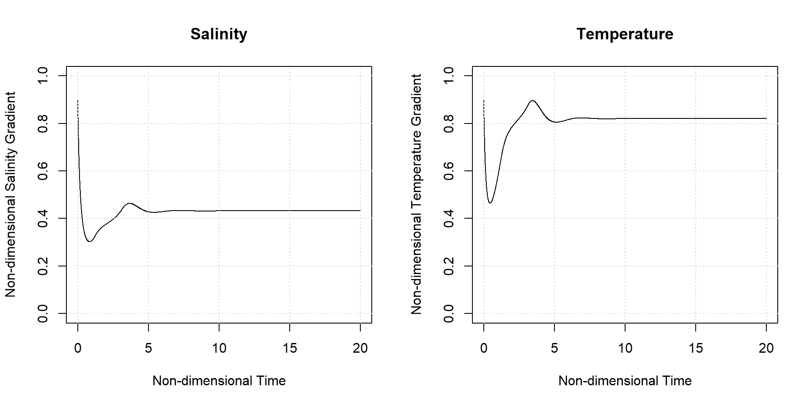
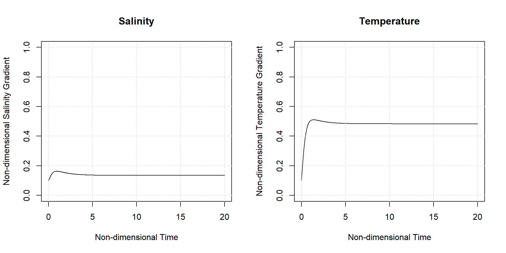
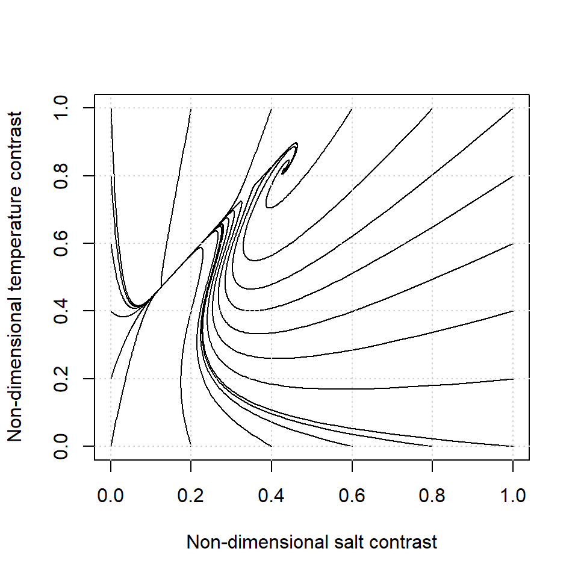
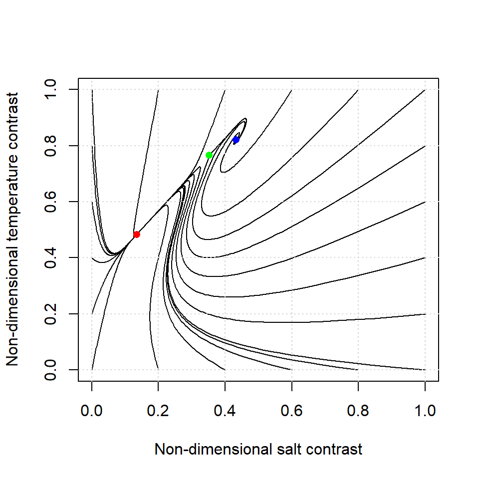
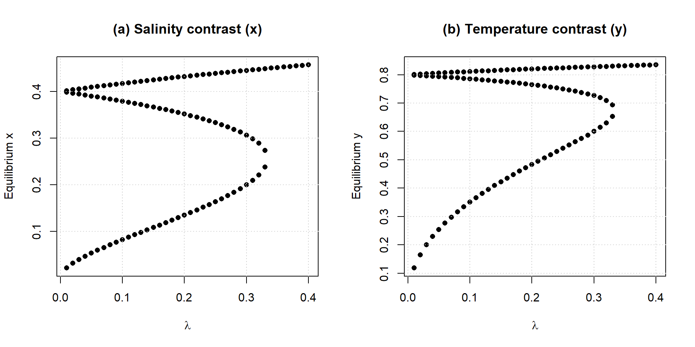
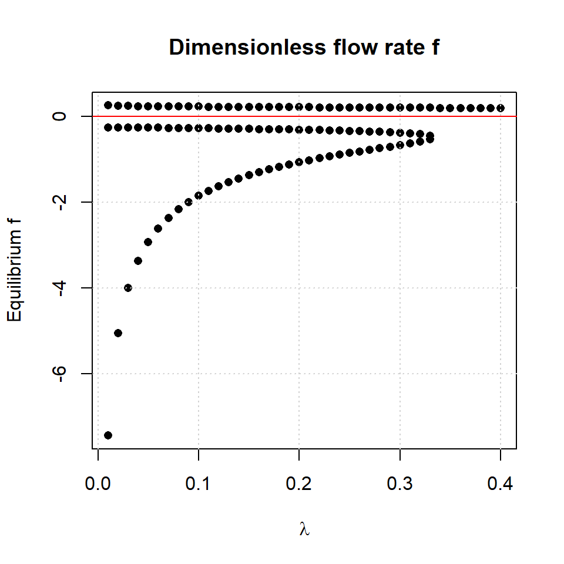
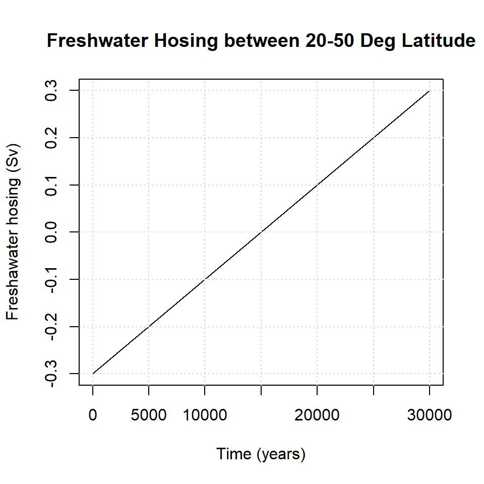

Chapter 6 Ocean Circulation
Student Name: ___
6.1 The Stommel Model
Henry Stommel developed a conceptual model of the thermohaline circulation, which he published in a seminal paper in 1961. The model consists of two idealized ocean boxes representing low-latitude warm water and high-latitude cold water. The circulation between the boxes is driven by density differences: denser water sinks in the high-latitude box, flows equatorward at depth, and returns poleward near the surface, conserving mass. The strength of the circulation increases with the density contrast between the boxes. Water density depends on both temperature and salinity: higher salinity increases density, whereas higher temperature decreases it.
In the low-latitude box, the temperature is warmer because the overlying atmosphere is warmer, and the salinity is higher because prescribed evaporation exceeds precipitation. In the high-latitude box, the temperature is colder because the overlying atmosphere is colder, and the salinity is lower because prescribed precipitation exceeds evaporation. The temperature in both boxes is strongly constrained by the atmosphere through restoring toward atmospheric temperatures, although exchange of water between the boxes can transport heat. The salinity, however, is directly affected by the circulation: stronger circulation transports salt between the boxes and tends to reduce the salinity contrast.
The flow is driven by density differences, which depend on both temperature and salinity with opposing effects: higher temperature decreases density, whereas higher salinity increases it. Thus, the low-latitude box is warm and salty, while the high-latitude box is cold and fresher.
Two types of circulation are possible. If density differences are dominated by temperature, the high-latitude box is denser than the low-latitude box, and water flows from high to low latitudes in the deep branch with a compensating surface return flow. This is the thermally dominated circulation. If density differences are dominated by salinity, the low-latitude box becomes denser, and the overturning circulation reverses, with deep flow toward high latitudes. This is the salinity-dominated circulation.
Because circulation transports salt between the boxes, stronger flow reduces the salinity contrast. This tends to stabilize thermally dominated circulation but weaken salinity-dominated circulation.
To better understand this, let’s assess how density is affected by temperature and salinity. The relationship is non-linear, and determined by the Thermodynamic Equation of Sea Water 2010 (TEOS-10). The Figure below gives the sea water density (blue contours in kg m-3) as a function of salinity and temperature.

6.1.1 Exercise: TS- Diagram (XX Points)
Q: The two dots denote conditions representative for the low-latitude and high-latitude boxes. Which one is which?
A: ___
Q: The blue dot has a higher density compared to the red dot. Is this due to the salinity contrast or the temperature contrast?
A: ___
Q: Let’s reduce salinity of the blue dot by 6 g/kg. Which dot would show the higher density?
A: ___
Q: How would this affect the direction of flow?
A: ___
Q: Explain the relevance of this finding for the context of climate change
In the Stommel model, we use a linearlized version of the equation of state:
\[ \rho = \rho_0 (1 - \alpha (T- T_0) + \beta (S-S_0) \]
where \(\rho\) is the sea water density (kg m\(^{-3}\)), \(T\) and \(S\) are temperature and salinity anomalies, respectively and \(\alpha\) is the thermal contraction (\(\alpha = 1.5 \times 10^{-4}\) K) and \(\beta\) is the saline expansion (\(\beta = 8 \times10^{-4}\) psu-1). The unit psu stands for practical salinity unit, which is a dimensionless unit that expresses the ratio of conductivities. A value of 1 psu roughly correspond 1 g salt per 1 kg sea water. \(T_0\) and \(S_0\) are reference temperature and salinity (\(T_0\) = 10\(^{\circ}\)C, \(S_0\) = 35 g kg-1). Let’s create a T-S diagram with this linearlized version of the equation of state.

You can see that the density values are similar, but not identical. However, using a linearlized equation of state keeps the math below more simple. Let’s now finally get to the Stommel model.
The Stommel model consists of two ODEs, which represent the non-dimensional salinity contrast (\(x\)), non-dimensional temperature contrast (\(y\)) (page 227 in respective paper):
\[ \frac{dx}{d\tau} = \delta(1-x) - \frac{x}{\lambda} |-y +Rx| \] \[ \frac{dy}{d\tau} = 1 - y - \frac{y}{\lambda}|-y + Rx|\]
Let’s define each variable:
\(x\) (-) is the non-dimensional salinity contrast between box 1 (polar) and box 2 (tropical): \(x = \frac{\Delta S}{\Delta S^*}\), where \(\Delta S^*\) is the typical salinity contrast between both boxes. In the model, \(S^*\) denotes the salinity of the imposed boundary conditions. If \(x<1\) then that means that the contrast is smaller than the imposed contrast.
\(y\) (-) is the non-dimensional temperature contrast between box 1 (polar) and box 2 (tropical): \(y = \frac{\Delta T}{\Delta T^*}\), where \(\Delta T^*\) is the typical temperature contrast between both boxes. In the model, \(T^*\) denotes the salinity in the adjacent ocean basin. If \(y<1\) then that means that the contrast is smaller than the imposed contrast.
\(\delta\) (-) is the ratio of the salinity transfer coefficient (\(d\), in s-1) and temperature transfer coefficient (\(c\), in s-1): \(\delta = \frac{d}{c}\). If \(\delta<1\) then the temperature transfer rate exceeds the salinity transfer rate.
\(\tau\) (-) is the non-dimensional time variable: \(\tau = ct\)
\(R\) (-) is a ratio that expresses the relative effect of salinity and temperature on seawater density: \(R = \frac{\beta \Delta S^*}{\alpha \Delta T^*}\)
\(\alpha\) (K-1) is the thermal contraction (\(\alpha = 1.5 \times 10^{-4}\) K-1)
\(\beta\) (psu-1) is the saline expansion (\(\beta = 8 \times10^{-4}\) psu-1)
\(\lambda\) (-) measures the relative strength of flow resistance to thermal forcing: \(\lambda = \left( \frac{c}{4 \rho_0 \alpha \Delta T^*} \right) k\). The larger \(\lambda\), the weaker the circulation response to temperature contrast.
\(k\) (kg m\(^{-3}\) s) is the resistance of the capillary tube: \(q=\frac{1}{k}(\rho_1-\rho_2)\)
\(q\) (s\(^{-1}\)) is the flow rate: \(q=\frac{1}{k}(\rho_1-\rho_2)\)
To summarize, the Stommel model has three main parameters: \(R\), \(\delta\), and \(\lambda\). Let us begin by plotting the free solution of the dynamical system for \(R\) = 2, \(\delta\) = 1/6, and \(\lambda\) = 1/5, as well as initial conditions of \(x = 0.1\) and \(y = 0.1\):
# Load required package
library(deSolve)
# Define parameters (change these to explore different behavior)
R <- 2
delta <- 1/6
lambda <- 1/5
# Define the system of ODEs
system <- function(t, state, parameters) {
x <- state[1]
y <- state[2]
dx <- delta * (1-x) - x/lambda * abs(-y + R * x)
dy <- 1 - y - y/lambda * abs(-y + R * x)
list(c(dx, dy))
}
# Initial conditions
initial_conditions <- c(0.9, 0.9)
# Time span
dt <- 0.01
times <- seq(0, 20, by = dt)
# Solve ODEs for each initial condition
solutions <- ode(
y = initial_conditions,
times = times,
func = system,
parms = NULL,
method = "lsoda"
)
# Plot
df <- data.frame(solutions)
colnames(df) <- c("time", "x", "y")
par(mfrow = c(1,2))
plot(
x = df$time,
y = df$x,
type = "l",
ylim = c(0, 1),
ylab = "Non-dimensional Salinity Gradient",
xlab = "Non-dimensional Time",
main = "Salinity"
)
grid()
plot(
x = df$time,
y = df$y,
type = "l",
ylim = c(0, 1),
ylab = "Non-dimensional Temperature Gradient",
xlab = "Non-dimensional Time",
main = "Temperature"
)
grid()
6.1.2 Exercise: Initial conditions (XX Points)
Change the initial conditions to \(x = 0.1\) and \(y = 0.1\) to reproduce the figure below.

Q: What do you conclude from these figures?
A: ___
Q: Compare the four figures above with Figure 7 in Stommel’s 1961 paper. Explain why your figures above are consistent with what you see in Stommel’s Figure 7.
A: ___
6.1.3 Exercise: Phase portrait (XX Points)
We can use the same function to plot non-dimensional salinity contrast (\(x\)) against non-dimensional temperature contrast (\(y\)) for different initial conditions. This leads to a so-called phase portrait.
rm(list = ls())
# Define parameters (change these to explore different behavior)
R <- 2
delta <- 1/6
lambda <- 1/5
# Define the system of ODEs
system <- function(t, state, parameters) {
x <- state[1]
y <- state[2]
dx <- delta * (1-x) - x/lambda * abs(-y + R * x)
dy <- 1 - y - y/lambda * abs(-y + R * x)
list(c(dx, dy))
}
# Initial conditions
num <- seq(0, 1, 0.2)
zer <- rep(0, length(num))
one <- rep(1, length(num))
x <- c(zer, num, one, num)
y <- c(num, one, num, zer)
# Time span
dt <- 0.01
times <- seq(0, 20, by = dt)
n <- length(x)
result <- vector("list", n) # preallocate
for (i in 1:n)
{
x.i <- x[i]
y.i <- y[i]
initial_conditions <- c(x.i, y.i)
# Solve ODEs for each initial condition
solutions <- ode(
y = initial_conditions,
times = times,
func = system,
parms = NULL,
method = "lsoda"
)
df <- data.frame(solutions[,2], solutions[,3])
colnames(df) <- c("x", "y")
result[[i]] <- df
}
x <- result[[1]]$x
y <- result[[1]]$y
plot(x, y, type = "l", xlim = c(0,1), ylim = c(0,1),
xlab = "Non-dimensional salt contrast",
ylab = "Non-dimensional temperature contrast")
for (i in 1:n) {
x <- result[[i]]$x
y <- result[[i]]$y
lines(x, y, type = "l")
}
grid()
Q: Identify at least one equilibrium point
A: ___
6.1.4 Exercise: Equillibrium points (XX Points)
The phase portrait above identified three equilibrium points. Let us know calculate those equilibrium points from the equations. In the section on linear algebra, we did this by setting the ODEs to zero and solving for each variable. For more complicated ODEs, we can also approximate the equilibrium points numerically, which is what we will do here.
rm(list = ls())
library(rootSolve)
R <- 2
delta <- 1/6
lambda <- 1/5
# system of equations
f <- function(z) {
x <- z[1]
y <- z[2]
dx <- delta * (1 - x) - x/lambda * abs(-y + R*x)
dy <- 1 - y - y/lambda * abs(-y + R*x)
c(dx, dy)
}
# grid of starting guesses
xstart <- seq(-1, 2, length=8)
ystart <- seq(-1, 2, length=8)
solutions <- list()
for(xs in xstart){
for(ys in ystart){
out <- try(multiroot(f, start=c(xs,ys)), silent=TRUE)
if(!inherits(out,"try-error")){
solutions[[length(solutions)+1]] <- out$root
}
}
}
# combine and remove duplicates
solmat <- do.call(rbind, solutions)
unique_solutions <- unique(round(solmat, 4))
print(unique_solutions)## [,1] [,2]
## [1,] 0.1350 0.4836
## [2,] 0.4321 0.8203
## [3,] 0.3518 0.7651Let’s plot these three equilibrium points into our phase portrait. Do this by copying the code from above and then add points(x = 0.1350, y = 0.4836), pch = 16, col = "red" below. Do this for all three points.

- Q: Are our calculated equilibrium points consistent with Stommel’s Figure 7?
- A: ___
6.1.5 Jacobian matrix and equilibrium eigenvalues
Let’s recall our set of ODEs:
\[ \frac{dx}{d\tau} = \delta(1-x) - \frac{x}{\lambda} |-y +Rx| \] \[ \frac{dy}{d\tau} = 1 - y - \frac{y}{\lambda}|-y + Rx|\]
Recall the Jacobian matrix:
\[ \mathbf{J} = \begin{bmatrix} \frac{\partial f_1}{\partial x} & \frac{\partial f_1}{\partial y} \\ \frac{\partial f_2}{\partial x} & \frac{\partial f_2}{\partial y} \\ \end{bmatrix} \]
The elements of this matrix are:
Rather than calculating the derivatives analytically, we will approach them numerically:
##
## Attaching package: 'numDeriv'## The following object is masked from 'package:rootSolve':
##
## hessian# constants
R <- 2
delta <- 1/6
lambda <- 1/5
my.ODEs <- function(z) {
x <- z[1]
y <- z[2]
dx <- delta*(1-x) - x/lambda * abs(-y + R*x)
dy <- 1 - y - y/lambda * abs(-y + R*x)
c(dx, dy)
}
# Equilibrium solutions
zstar <- unique_solutions[1,]
J <- jacobian(func = my.ODEs, x = zstar)
eigenvalues <- eigen(J)$values
eigen.01 <- eigenvalues
zstar <- unique_solutions[2,]
J <- jacobian(func = my.ODEs, x = zstar)
eigenvalues <- eigen(J)$values
eigen.02 <- eigenvalues
zstar <- unique_solutions[3,]
J <- jacobian(func = my.ODEs, x = zstar)
eigenvalues <- eigen(J)$values
eigen.03 <- eigenvalues
df <- data.frame(eigen.01, eigen.02, eigen.03)
print(df)## eigen.01 eigen.02 eigen.03
## 1 -3.6096813 -0.9125833+1.823107i -2.8493110
## 2 -0.7609854 -0.9125833-1.823107i 0.7601443Recall that the equilibrium eigenvalues characterize the equilibrium point, e.g.:
- If all eigenvalues \(>0\): unstable node
- If all eigenvalues \(<0\): stable node
- If the sign varies among eigenvalues: saddle (unstable)
- If any \(\lambda = 0\): tipping point
The second equilibrium point is described by a complex number with a real and an imaginary component. Here we are only concerend with the real component of the number.
Q: Classify each of the three equilibrium points
A: ___
6.1.6 Bifurcation diagram
Recall that \(\lambda\) (-) measures the relative strength of flow resistance to thermal forcing:
\[\lambda = \left( \frac{c}{4 \rho_0 \alpha \Delta T^*} \right) k\]. The larger \(\lambda\), the weaker the circulation response to temperature contrast. Let us now vary the parameter \(\lambda\) and calculate the equilibrium points for different values of \(\lambda\). This will result in the bifurcation diagram below.
library(rootSolve)
R <- 2
delta <- 1/6
f <- function(z, lambda) {
x <- z[1]; y <- z[2]
dx <- delta*(1-x) - x/lambda * abs(-y + R*x)
dy <- 1 - y - y/lambda * abs(-y + R*x)
c(dx, dy)
}
find_eq <- function(lambda){
xstart <- seq(-0.5, 1.5, length=6)
ystart <- seq(-0.5, 1.5, length=6)
sols <- list()
for(xs in xstart){
for(ys in ystart){
out <- try(multiroot(f, start=c(xs,ys),
lambda=lambda),
silent=TRUE)
if(!inherits(out,"try-error")){
root <- out$root
# --- convergence check ---
res <- f(root, lambda)
if(max(abs(res)) < 1e-6) # tolerance
sols[[length(sols)+1]] <- root
}
}
}
if(length(sols)==0) return(NULL)
unique(round(do.call(rbind, sols), 4))
}
# sweep lambda
lambdas <- seq(0.01, 0.4, by = 0.01)
results <- data.frame()
for(lam in lambdas){
eq <- find_eq(lam)
if(is.null(eq)) next
results <- rbind(results,
data.frame(lambda=lam,
x=eq[,1],
y=eq[,2]))
}
par(mfrow = c(1,2))
# plot bifurcation diagram (x equilibrium)
plot(results$lambda, results$x,
pch=16,
xlab=expression(lambda),
ylab="Equilibrium x",
main="(a) Salinity contrast (x)")
grid()
plot(results$lambda, results$y,
pch=16,
xlab=expression(lambda),
ylab="Equilibrium y",
main="(b) Temperature contrast (y)")
grid()
Q: Which are the stable and which are the unstable branches for the bifurcation diagram?
A: ___
From the equilibrium \(x\) (non-dimensional salinity contrast) and \(y\) (non-dimensional temperature contrast) values, we can calculated the corresponding dimensionless flow rate \(f\):
\[f = (-y + Rx) /\lambda \]
If \(f<0\) then the circulation is in a temperature-mode (T-mode): the deep branch flow is in the direction set by temperature contrast (from cold to warm = from high to low latitudes)
If \(f>0\) then the circulation is in a salinity mode (S-mode): the deep branch flow is in the direction set by salinity contrast (from salty to fresh = from low to high latitudes)
library(rootSolve)
R <- 2
delta <- 1/6
f <- function(z, lambda) {
x <- z[1]; y <- z[2]
dx <- delta*(1-x) - x/lambda * abs(-y + R*x)
dy <- 1 - y - y/lambda * abs(-y + R*x)
c(dx, dy)
}
find_eq <- function(lambda){
xstart <- seq(-0.5, 1.5, length=6)
ystart <- seq(-0.5, 1.5, length=6)
sols <- list()
for(xs in xstart){
for(ys in ystart){
out <- try(multiroot(f, start=c(xs,ys),
lambda=lambda),
silent=TRUE)
if(!inherits(out,"try-error")){
root <- out$root
# --- convergence check ---
res <- f(root, lambda)
if(max(abs(res)) < 1e-6) # tolerance
sols[[length(sols)+1]] <- root
}
}
}
if(length(sols)==0) return(NULL)
unique(round(do.call(rbind, sols), 4))
}
# sweep lambda
lambdas <- seq(0.01, 0.4, by = 0.01)
results <- data.frame()
for(lam in lambdas){
eq <- find_eq(lam)
if(is.null(eq)) next
results <- rbind(results,
data.frame(lambda=lam,
x=eq[,1],
y=eq[,2]))
}
lambda <- results$lambda
x <- results$x
y <- results$y
f <- (-y + R*x) / lambda
par(mfrow = c(1,1))
# plot bifurcation diagram (x equilibrium)
plot(results$lambda, f,
pch=16,
xlab=expression(lambda),
ylab="Equilibrium f",
main="Dimensionless flow rate f")
grid()
abline(h = 0, col = "red")
Q: Consider you are in the T-mode and \(\lambda\) = 0.3. Let’s say that \(\lambda\) increases to 0.35. What will happen with the direction of the flow?
A: __
Q: Next, imagine \(\lambda\) then returns from 0.35 back to 0.3. How will this affect the flow.
A: __
Q: Have another look at your phase diagram. Calculate \(f\) for each point and evaluate Which of the equilibrium points corresponds to the T-mode, and which to the S-mode?
A: ___
6.2 CLIMBER-X: Hosing experiments
We are now going to look at the hosing experiments
./runme -rs -q medium -w 60:00:00 --omp 32 -o $output/$outdir/hyst2050/up -p ctl.nyears=30000 ocn.l_hosing=T ocn.hosing_ini=-0.3 ocn.hosing_trend=0.02 ocn.lat_min_hosing=20 ocn.lat_max_hosing=50Let’s assess what this means:
./runme -rs -q medium -w 60:00:00runs the model and tells the HPC how much computational resources the model requires-o $output/$outdir/hyst2050/uptells the HPC where to store the output-psets the parameters. The meaning of each parameter is outlined in the different namelist files (.nml)located in/CLIMBER-X/climber-x/nml/You can find the meaning of each parameter as follows:
# go to the directory where the namelist files are stored
cd /CLIMBER-X/climber-x/nml/
# search for the parameter in all namelist files:
grep -r "nyears" *.nmlHere a list of all the parameters that were set for this experiment:
ctl.nyears=30000: number of simulation yearsocn.l_hosing=T: apply additional freshwater hosing? (\(T\) stands for TRUE, \(F\) for FALSE)ocn.hosing_ini=-0.3: Sv, inital/constant value of hosing fluxocn.hosing_trend=0.02: Sv/kyr, rate at which hosing flux is increased/decreasedocn.lat_min_hosing=20: lower latitude bound for region of freshwater fluxocn.lat_max_hosing=50: higher latitude bound for region of freshwater flux
The command to run the freshwater hosing experiment only mentions a few parameters. For all other parameter, the default setting is chosen. For instance, the atmospheric CO2 concentration is set to a constant value of 280 ppmv. Recall that Sv = Sverdrup = 106 km2 s-1. Let’s now translate the command below into words:
./runme -rs -q medium -w 60:00:00 --omp 32 -o $output/$outdir/hyst2050/up -p ctl.nyears=30000 ocn.l_hosing=T ocn.hosing_ini=-0.3 ocn.hosing_trend=0.02 ocn.lat_min_hosing=20 ocn.lat_max_hosing=50This means: simulate 30,000 years starting with an initial freshwater input of -0.3 Sv between 20 and 50 degrees latitude in the North Atlantic. The freshwater flux is increased by a rate of 0.02 Sv/1000 years, causing it to increase from -0.3 Sv to +0.3 Sv after 30,000 years. What does a negative freshwater flux mean? A negative freshwater flux means that freshwater is taken out of the ocean (evaporation > precipitation), increasing the seawater’s salinity.
- Q: Reproduce the figure below to illuistrate how the hosing changes over time

We will also conduct another experiment:
./runme -rs -q medium -w 60:00:00 --omp 32 -o $output/$outdir/hyst2050/down -p ctl.nyears=30000 ocn.l_hosing=T ocn.hosing_ini=0.3 ocn.hosing_trend=-0.02 ocn.lat_min_hosing=20 ocn.lat_max_hosing=50Q: Explain what this simulation does, and make a figure similar to the one above that illustrates how the freshwater hosing changes over time
A: ___
The AMOC strength is defined as the maximum of the Atlantic meridional streamfunction deeper than 700 m. The initial condition for both these experiments is a pre-industrial equilibrium simulation run for 10 000 years with 280 ppm of CO2 and present-day ice sheets.
until 0.5 Sv or starting from +0.5 Sv hosing flux and gradually decreasing it until −0.5 Sv.
./runme -rs -q medium -w 60:00:00 --omp 32 -o $output/$outdir/hyst2050/down -p ctl.nyears=30000 ocn.l_hosing=T ocn.hosing_ini=0.3 ocn.hosing_trend=-0.02 ocn.lat_min_hosing=20 ocn.lat_max_hosing=50